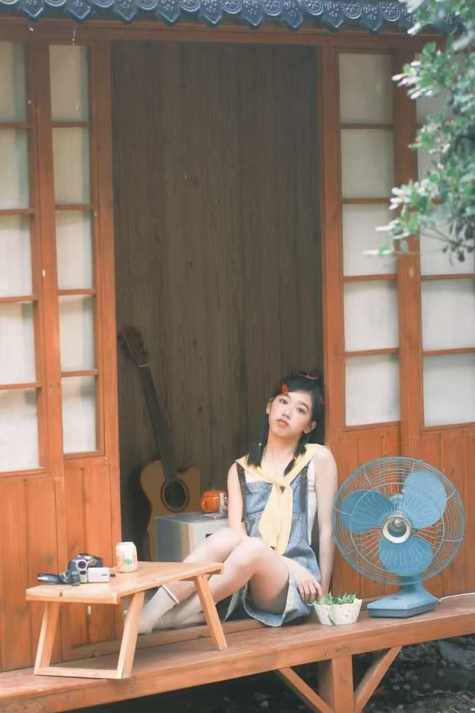
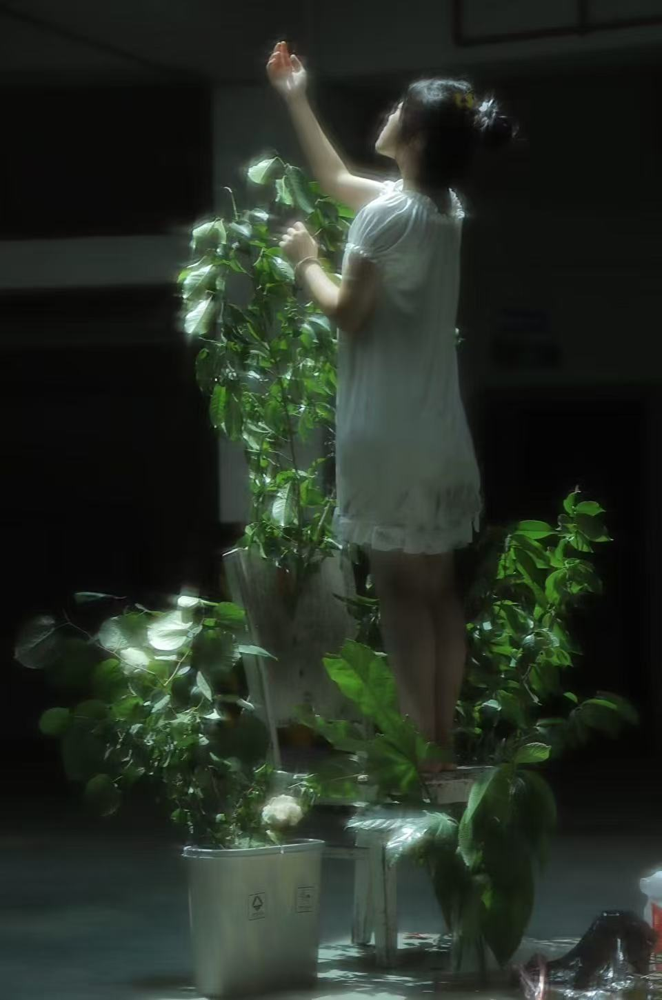

摄影手记
“日杂氧气”风，是让镜头住进日常里的松弛感。
偏爱柔和漫射光，用低饱和的米棕、浅绿铺陈底色，不追精致摆拍，只捕捉自然瞬间：
风掀动的书页、窗边晃悠的绿植、檐角漏下的光斑。像翻一本旧杂志，每帧都带着呼吸般的轻盈治愈。
下面是我的一些摄影作品：
-
天使女仆拍摄时间：2025年11月 拍摄地点：宁波

“我保证我是天使”˶⊗𐋣ᗜ˶ಣ
喜欢数：0 -
夏日重现拍摄时间：2023年8月 拍摄地点：嘉兴
木制窗棂边的夏日，是橘子味的风和没说完的悄悄话...
喜欢数：0 -
地下曦光拍摄时间：2021年10月 拍摄地点：平湖
地下阒然，呼吸漫成潮汐，一束光无意间滴落，晕开隐秘的序章
喜欢数：0
本页作品统计：共 9 张作品，总喜欢数：0
常用设备
- 相机：sony a7c2 ; 富士xt20
- 其他：反光板、三脚架、打光灯